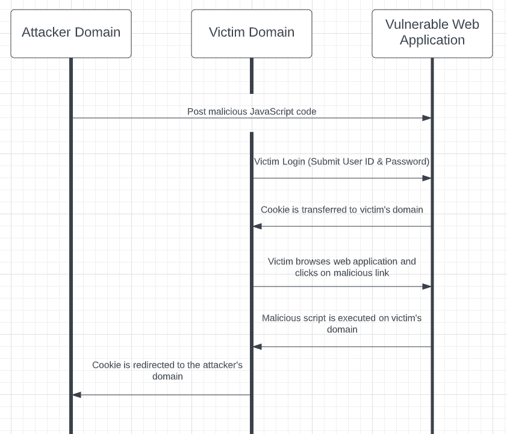

Initial Post
Cross site scripting is a typical web attack that compromises the user’s interactions with the application through an attacker injecting malicious code to a target web application. An attacker gains knowledge of the victims’ credentials, and can often gain full control of the victim's functionality and data. The web application thus becomes a vehicle to deliver malicious script to the user’s browser (PortSwigger, 2020).
Cross-site scripting (or XSS) works by returning malicious (often JavaScript) code to a user’s request. Typically this happens when a user logs in, browses a web application, and clicks on a link that runs the malicious script on the victims domain (often found on legitimate websites). The attacker thus gains access to personal information ranging from passwords to banking login details, amongst other sensitive information. A web page is typically vulnerable if unsanitized user input is used (sanitized - only valid input characters are used) (Fernandez & Sulatycki, 2015).
There are a few methods to mitigate the risk of a XSS attack. The following are general methods used to reduce your risk of XSS attacks,
as identified by OWASP (Mitre, 2017):
1. Train and keep all staff up-to-date on the risks associated with XSS vulnerabilities.
2.Treat all input as public input, even if it is from an authenticated/internal source.
3. Use appropriate escaping/encoding techniques (HTML, JavaScript, URL escapes etc). Use existing libraries when possible
4. Use libraries to Sanitize HTML
5. Set HttpOnly flag, so that cookies will not be accessible via client-side JavaScript.
6. Use a Content Security Policy response header.
7. Scan your web application regularly with vulnerability scanning software.
REFERENCES
Fernandez, E. & Sulatycki, R., 2015. A threat pattern for the cross-site scripting (XSS) attack. Semantic Scholar, 2(1).
Mitre, 2017. Weaknesses in OWASP Top Ten.
PortSwigger, 2020. Cross-site scripting. [Online]. Available at: https://portswigger.net/web-security/cross-site-scripting
[Accessed 14 03 2022].
REPLY - Kei Yui Yvone Chan
Apart from detecting XSS vulnerability, Marashdih and Zaaba (2017) described methods to remove XSS vulnerability and the tools to remove XSS vulnerability from the source code.
OWASP has launched the Enterprise Security API (ESAPI) that can be utilised to enforce XSS attack prevention rules. The XSS vulnerabilities are first identified by OWASP's ESAPI security procedure. Next, the types of the ESAPI-escaping protocols need to be applied to substitute vulnerable codes are recognised. Finally, the secure scripts are produced and the questionable codes are replaced. By using ESAPI safety mechanism, all detected XSS vulnerabilities in web applications based on Java can be removed.
HTMLPurifier is another tool in PHP that can eliminate malicious scripts. The main advantages of the deployment of HTMLPurifier are the substantially secure validation of user inputs and relatively easy-to-use characteristic
REFERENCE
Marashdih, A.W., Zaaba, Z.F. (2017) Cross Site Scripting: Removing Approaches in Web Application. Procedia Computer Science (124): 647-655